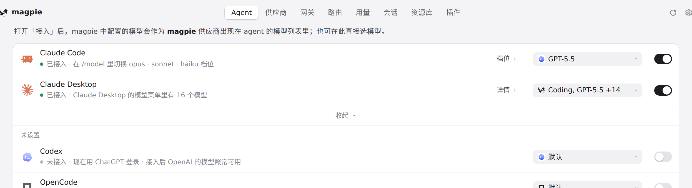
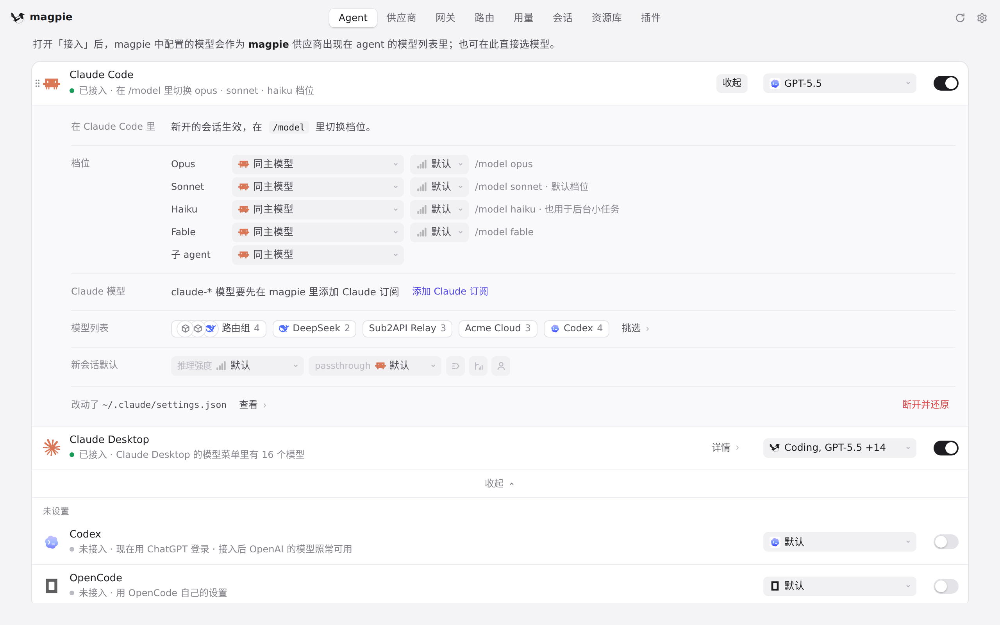

#616 界面预览
commit eecdbcf · 回到 PR · 在 Claude Code 这个 Agent 的行上新增了一个 passthrough 设置项（只出现在本机，WSL 里不出现）：默认关闭，选 on 后 Claude Code 用自己的 OAuth 登录直连 Anthropic，magpie 不再往它的配置里写 ANTHROPIC_AUTH_TOKEN，网关也对这类请求放行。
红线是鼠标走过的轨迹，红色圆环是一次点击；底部文字是这一步在做什么。空格暂停，← → 逐段查看。
 Claude Code 行上的 passthrough 设置 · 展开后 Claude Code 行上多出的 passthrough 设置
Claude Code 行上的 passthrough 设置 · 展开后 Claude Code 行上多出的 passthrough 设置

Claude Code 行上的 passthrough 设置 · 接入后的 Claude Code 行

Claude Code 行上的 passthrough 设置 · Claude Code 的设置里出现的 passthrough
 Claude Code 行上的 passthrough 设置 · passthrough 的选项和它的说明
Claude Code 行上的 passthrough 设置 · passthrough 的选项和它的说明